One Step at a Time
How machines follow a procedure
Describe a Procedure: Making Toast
Think about making a piece of toast, from getting the bread out of the bag to it popping up ready to eat.
Write out the procedure as an ordered list of steps. Do not worry about being exact, just get the steps down in order.
Let's Think Specifically About the Toaster
Let's simplify the toaster's procedure into three broad steps. You can think of each step as a distinct part of the process. The toaster is doing something, until that something is complete and the next step can begin.
The toaster is waiting to do its job.
The toaster is doing its job.
The toaster's job is done.
What Happens During Each Step?
For every step, we are going to ask two questions: what actually happens, and how do you know it is over.
Let's Try It With Another Procedure
We just broke the toaster down into steps, and for each one we asked how it knows to start and what actually happens in between. Let's use that same thinking on a different everyday machine: a washing machine.
Describe a Procedure: Doing a Load of Laundry
Think about running one load of laundry in a washing machine, from loading the clothes in to taking them out clean.
Write out the procedure as an ordered list of steps. Do not worry about being exact, just get the steps down in order.
Let's Think Specifically About the Washing Machine
Let's simplify the washing machine's procedure into five broad steps. You can think of each step as a distinct part of the process. The machine is doing something, until that something is complete and the next step can begin.
The machine is waiting to do its job.
The machine is washing the clothes.
The machine is draining the dirty water.
The machine is rinsing the clothes.
The machine is spinning the water out.
A note on Wash and Rinse: both of those steps actually start with the fill valve opening, and the valve closes on its own once the tub is full. We are treating that as part of the bigger step rather than splitting it into its own step.
What Happens During Each Step?
For every step, we are going to ask two questions: what actually happens, and how do you know it is over.
This Is a State Machine
The toaster and the washing machine both followed the same pattern: a series of steps, each one asking what happens and what tells it to move on. That pattern has a name, and so does each piece of it.
Stepping Through the States
Let's build a state machine of our own: a four-step procedure controlled by two buttons. Pressing Start moves us into State 1. From there, we advance one state at a time by toggling a Step button: every press and every release is its own trigger, so we step forward on STEP and again on ~STEP. We will leave the actions blank for now and fill them in later.
Once Step 4 finishes, ~STEP sends us right back to S1. A real machine rarely runs a sequence once: it loops back to the start so it is ready to run the whole procedure again.
Notice that the same trigger can move us into different states. How does the machine know to move you to S2 the next time you press STEP rather than S2?
Something Has to Remember
We knew we were "in State 4" because we could see the circle light up. A real circuit has no screen to look at. A wire is just a voltage that is happening right now. It doesn't remember what happened a second ago and can't predict what happens a second from now.
So if a machine needs to know it is currently in State 4, something in the circuit has to actively hold onto that fact.
Set-Reset Latch (RS): a small memory element with one output and two inputs. A pulse on Set turns the output on, and the latch remembers it, holding the output on until a pulse on Reset turns it back off.
One Latch per State
Every wire on an RS latch already has a name in our vocabulary: Set and Reset are triggers, and Q is simply whether the state is active right now.
Try it: press Set and Reset below and watch how Q responds. Why do you think it's called a latch?
In FluidSim, we will wire one RS latch for every state in our sequence: while its output is on, that state is active, no matter how briefly its trigger actually fired.
S1's Circuit: The Simple Case
Let's build our first real latch for state S1. We start state 1 with a single trigger: when Start fires, S1 becomes active. Start wires straight into S.
That leaves the Reset line still not connected. What turns S1 back off? We will leave it open for now: once we have built S2, we will have exactly what we need to close the loop.
Which State Are We Leaving?
Back on our four-state demo, we asked a hard question: if we are in S1 and we press STEP, how does the machine know to move to S2, and not S4? Every press of STEP looks exactly the same to the button. It has no idea which state we are currently in.
The trigger alone is almost never enough. The machine also has to check which latch is currently on. It only makes sense to turn S2 on when S1's output is on and STEP fires.
The Same Rule, Every Time
Every transition in our sequence works the same way. A trigger only counts while we are standing in the state it is meant to end. In FluidSim, each state's Set input will come from exactly this: an AND between the state before it and the trigger that ends it.
Three Inputs from Two Signals
FluidSim's AND block always has three inputs, but we often only have two signals to combine. (In this case, S1 Active and STEP). What do we connect to the third input?
Wire the same signal into two of the three inputs instead of leaving one empty. It does not matter which signal gets duplicated, as long as both copies come from the same wire.
This works because ANDing a signal with itself changes nothing: if a wire is on, it is on, checking it twice does not make it more on. So a three-input AND fed S1 Active, S1 Active, and STEP behaves exactly like the two-input AND we actually wanted.
Set Is Covered. What About Reset?
We already built the AND that decides when a state should turn on. Now let's connect it where it belongs: the S input of an RS latch. The instant S1 Active and STEP are both true, even for a moment, this latch remembers it, and its output becomes S2 Active.
Set is covered: the moment the AND fires, the latch turns on and stays on. But nothing is wired to R yet, and without a Reset, this state would turn on and simply stay on forever, long after we have moved on to later states. Sound familiar? S1 has the exact same gap. Every latch we build needs an answer to the same question: what turns a state back off?
Tagging In
Let's finish the latch we started building for S1, several slides back. Reset turns out to follow its own simple rule, a mirror image of Set: wire R to the state that comes right after it. S2 Active is what tells S1 to stop, so that is what we connect there.
Press Start to send S1 into the ring, then press S2 Active to reset it, exactly like the moment the incoming wrestler tags S1 and sends it back to the corner.
S2 Active already tells the rest of the circuit that S2 is now the current state. That is exactly the signal S1 needs to hear that it is done: the same wire that turns S2 on is the wire that turns S1 off. One signal serves two purposes at once, that is what tagging in means here: S2 can only tag in while S1 is still in the ring, and the instant it does, that same tag sends S1 out.
An M Block on Every Reset
Every Reset in our sequence comes from a signal looping backward. S1's Reset comes from S2, but S2's own Set depends on S1 being active in the first place. That is a loop you'll find at every single stage in this circuit.
When you press run, FluidSim checks the whole logic network in a single pass, and it cannot resolve any of these on its own: wire a Reset straight from the next state's output and it throws a Digital Loop Detected error.
The fix for the loop is to drop an M block (a buffer which mirrors its one input to its one output) into every Reset wire. It breaks the loop FluidSim is complaining about without changing what the circuit actually does.
Completing S2's Latch
S2's Reset is the same open question S1's was, and the same M block trick closes it, fed this time by S3 Active. But S2's Set input is not as simple as S1's Start wire, remember the AND gate from a few slides back: S2 only turns on when S1 Active and STEP are both true.
Put that AND on Set and an M block on Reset, and S2's latch is complete:
That same combination, an AND gate on Set and an M block on Reset, closes the loop for every state after S2.
Build S1 in FluidSim
Time to stop sketching and start wiring. Open FluidSim and follow these steps to build S1's actual circuit.
Start a brand new, empty FluidSim project. This is where S1's latch will live.
Drop a Logic Module onto the canvas. Every block we have drawn is built from one of these.
Double-click the module. Drag text boxes and type new names next to the default I0, I1... labels.
Wire Start straight into S. Add the M block for R and connect its output to the RS Latch, but don't connect the input yet.
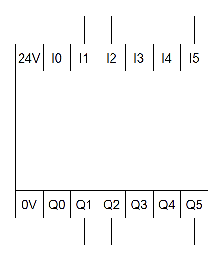
A Blank Logic Module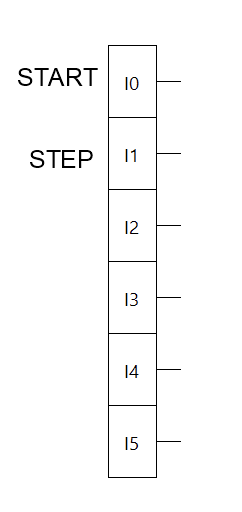
Inputs Renamed to Match Our DiagramsBuild S2, Then Connect Them
Drop a second Logic Module onto the canvas, below the one holding S1, and build S2's circuit into it: the same AND-on-Set, M-on-Reset pattern from a few slides back.
Match the diagram below: AND feeds S, M feeds R. Leave the S1 Active and S3 Active inputs unconnected for now.
Wire S1 Active into S2's AND and S2 Active into S1's M block .
Two Links in the Chain
Here are S1's and S2's circuits, actually wired together instead of just labeled to match. S1 Active is the same wire feeding S2's AND, and S2 Active is the same wire feeding S1's M block.
Let's add one more stage and watch the pattern repeat.
Three Links in the Chain
Build S3's circuit below S2's, then wire S2 Active into S3's AND and S3 Active back into S2's M block.
S2 Active now does double duty too: forward into S3's AND, and backward into S1's M block, exactly like S1 Active feeds S2 while S3 Active feeds back into S2's M block.
The STEP Bus
STEP and ~STEP are not two separate physical triggers. ~STEP is just STEP run through a NOT gate. In FluidSim that is a block labeled 1, with a small bubble on its output marking the signal as inverted.
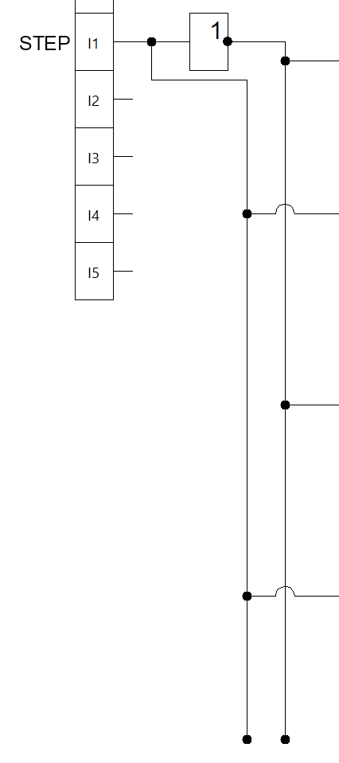
Use one NOT block, right off I1, and run STEP and ~STEP as busses, lines running straight down so that every state can tap into the one it needs rather than having to add new NOT blocks for each ~STEP.
Building S4
One more link before the chain wraps back around. S4 follows the exact same pattern as every state before it: S3 Active and STEP set it.
Like every state before it, S4's Reset routes through an M block. What feeds that M block is where the loop gets interesting.
No matter how many states there are, you repeat this pattern: one RS, an AND gate and one M buffer per state, connecting STEP or ~STEP and the active lines before and after.
Two Ways Into S1
Look at the full loop again. S1 has two separate arrows pointing into it: Start fires once, right at the beginning, and the loop-back arrow fires every time S4 finishes, forever after.
S1 needs to turn on for either reason: Start is pressed, or both S4 Active and ~STEP. Either one can move us into S1, but we need another block to combine these inputs. AND cannot do that: it needs every input true.
The loop-back arrow from S4 to S1 is also the clue we need to understand the reset for S4. S4 ends when S1 starts, so S1 Active is the signal S4's M block was waiting for. Let's make that connection now:
One or More Inputs
FluidSim's OR block always has three inputs like the AND block, but we only have two signals to combine: Start and S4 Active AND ~STEP. What do we connect to the third input?
Same trick as AND: wire one of the two signals into two of the three inputs instead of leaving one empty.
An OR block fires the moment one or more of its inputs are true. Duplicating a signal does not change that: true counted once or twice is still just true. So a three-input OR fed Start, Start, and S4 Active AND ~STEP behaves exactly like the two-input OR we actually wanted.
S1's Real Circuit
Now S1's Set input can finally be complete. Start feeds one side of an OR. S4 Active and ~STEP feed the other side, through the same AND pattern we have used everywhere else, except this one closes the whole loop: S4 Active needs its own M block before it reaches the AND, exactly like every Reset signal has.
The loop is complete. Every state has a Set, a Reset, and now S1 knows how to fire twice: once to start the whole procedure, and again every time it wraps back around.
Testing the Sequence
Step through the four-state controller in FluidSim: press Start, then Step, and confirm each state activates in the right order before moving on.
From Logic to a Real Machine
So far, every Active signal we've built has just lit up on screen. Wire that same signal to a solenoid coil instead of a light, and it can push a cylinder, run a motor, or trigger a vacuum grip. Let's connect the state machine we built to a real pick-and-place machine and watch it drive actual hardware.
What Is Our Controller Actually Running?
Here is the real machine behind S1 through S4: a pneumatic arm with a vacuum gripper. Press Start, then keep toggling STEP to watch it cycle through four states like we just built.
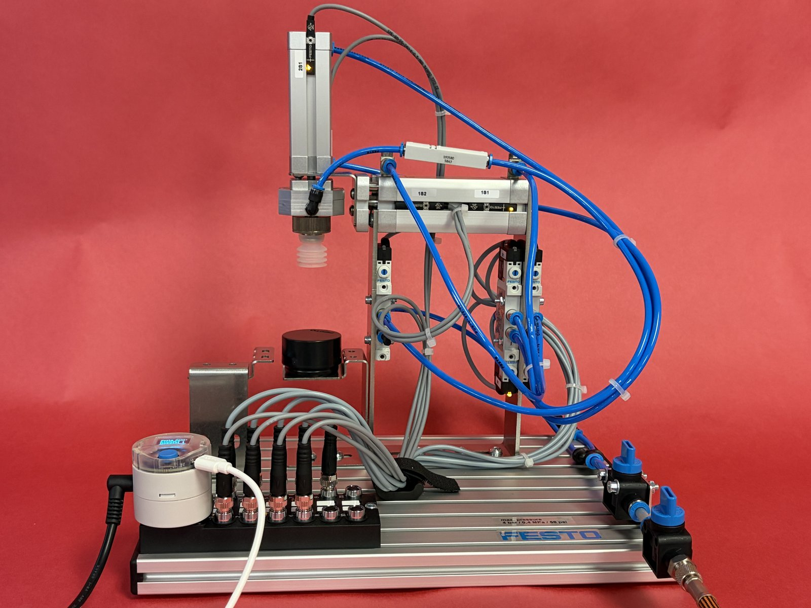
The gripper is retracted, waiting for a workpiece to be loaded.
The Pneumatic Circuit
This pick and place machine uses this pneumatic circuit: three directional control valves, each operated by one or two solenoid coils, routing compressed air to a cylinder or the vacuum generator.
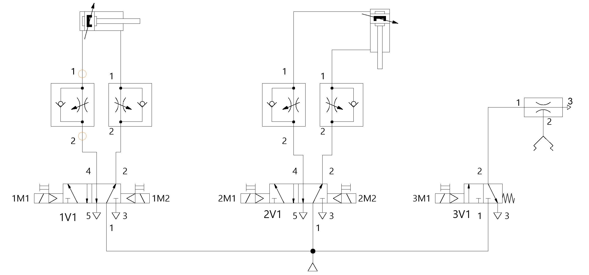
Cylinder 1: OUT / BACK. Not part of our four state cycle, we will need it when we scale up.
Cylinder 2: DOWN / UP. The vertical motion in every photo we've seen.
Vacuum generator: GRIP. Only one solenoid, with a spring return, so the vacuum is on only while 3M1 is energized.
The Control Circuit
The logic network we built lives inside a Logic Module. This is how it is wired, with buttons on the inputs and solenoid coils on the outputs.
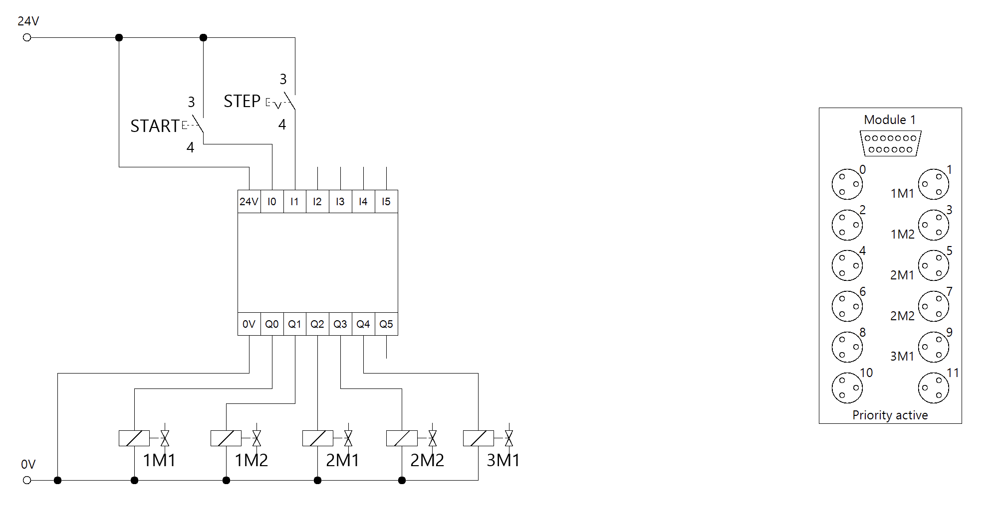
Start is wired as a pushbutton: a make contact that closes only while you are pressing it. Step is wired as a detent switch: also a make contact, but it stays latched closed once pressed, and only opens again on the next press. That latching is exactly the signal our Step / ~Step pairs have been reading all along.
Label the Outputs
Open the Logic Module. Drag a text box next to each output and name it for the solenoid it will energize.
Open it for editing, the same way you did to label the inputs.
Drag a text box next to Q0 through Q4 and type in the solenoid it drives and what that solenoid does: 1M1‑OUT, 1M2‑BACK, 2M1‑DOWN, 2M2‑UP, 3M1‑GRIP.
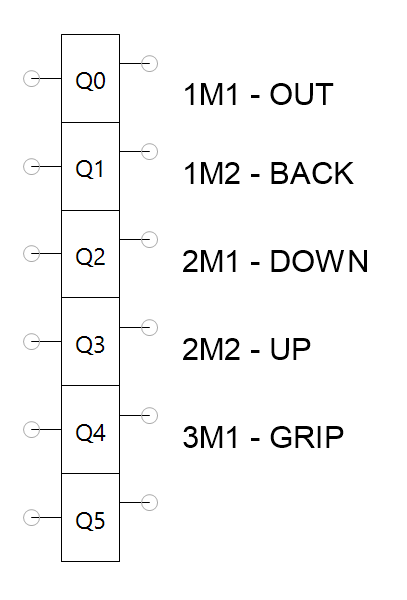
Outputs, LabeledCombining Signals
More than one state can involve the same action. S1 and S3 both move the gripper DOWN. S2 and S4 both move it UP. S2 and S3 both need the vacuum to GRIP. Each output needs to fire when any state that uses it is active, so drop OR blocks in front of each output.
Not part of our four states, leave these OR blocks empty for now.
S1 Active OR S3 Active.
S2 Active OR S4 Active.
S2 Active OR S3 Active.
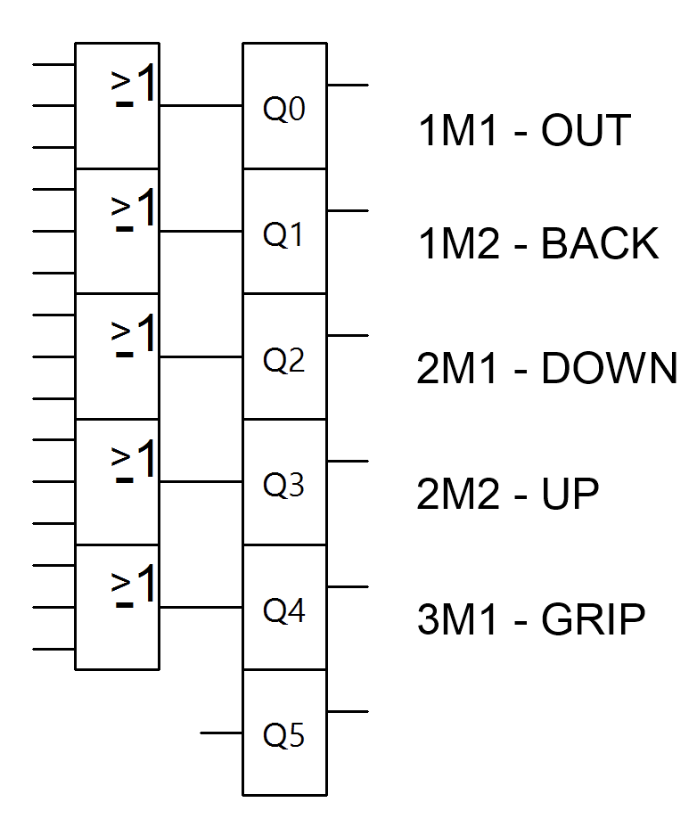
Testing the Outputs
With the outputs wired up, every state actually does something now. Press Start, then keep toggling STEP, and watch which outputs turn on as the machine moves.
The gripper is retracted, waiting for a workpiece to be loaded.
Let the Machine Trigger Itself
Right now, our machine advances through its cycle because someone presses Step at just the right moment.
It would be nice if the machine could be automated to trigger when it's ready. The hardware has sensors that can detect when the machine is in the correct position or when a task is complete. Replace Step with signals from the hardware, and the sequence advances itself.
Give Each Cylinder a Voice
On the real machine, sensors are already mounted on both cylinders from the pneumatic circuit, 1A1 and 2A1, so it always knows when a stroke has finished. Mirror that in FluidSim: open each linear drive and place a sensor at the retracted end and another at the extended end.
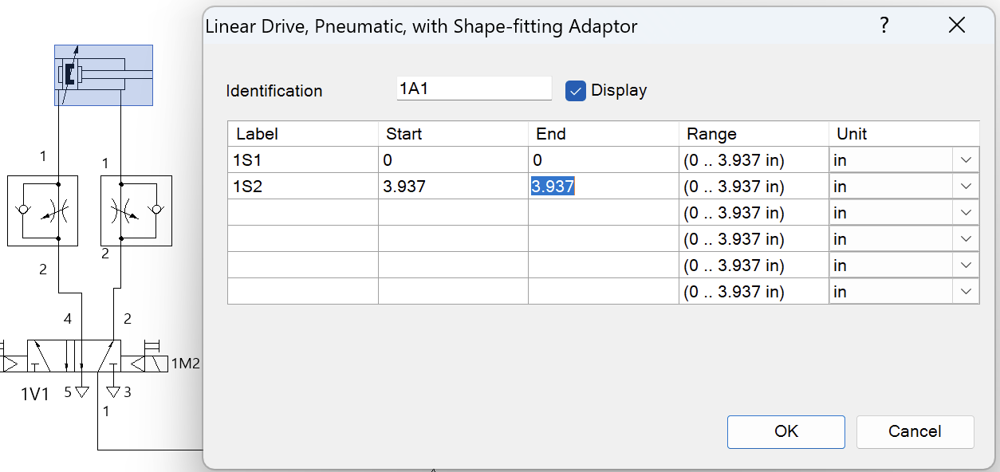
1A1 · 1S1 / 1S2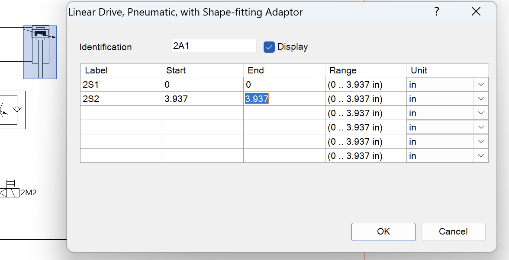
2A1 · 2S1 / 2S2S1 fires the instant the cylinder is fully retracted, S2 the instant it's fully extended. Set both sensors on both cylinders, and every stroke reports itself the moment it's done.
Wiring the Sensors In
Wire the magnetic proximity sensors into the Logic Module. 1S1 and 1S2 feed I2 and I3, 2S1 and 2S2 feed I4 and I5. Name each sensor in the schematic, then assign the sensors to inputs on the multi-pin plug distributor.

Label the Inputs
Open the Logic Module. Drag a text box next to each new input and name it for the sensor wired there and the position it detects.
Open it for editing, the same way you did to label the outputs.
Drag a text box next to I2 through I5 and type in the sensor wired there and the position it detects: 1S1‑BACK, 1S2‑OUT, 2S1‑UP, 2S2‑DOWN.
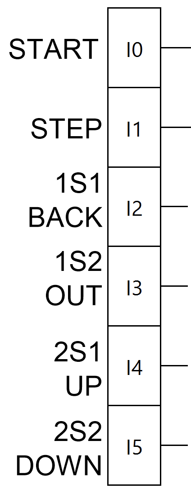
Inputs, LabeledA Bus for Every Input
Build a bus for each input: 1S1‑BACK, 1S2‑OUT, 2S1‑UP, and 2S2‑DOWN. Like the buses for STEP and ~STEP, each input becomes its own vertical line running down so that you can tap it wherever a state's circuit needs to read that signal.
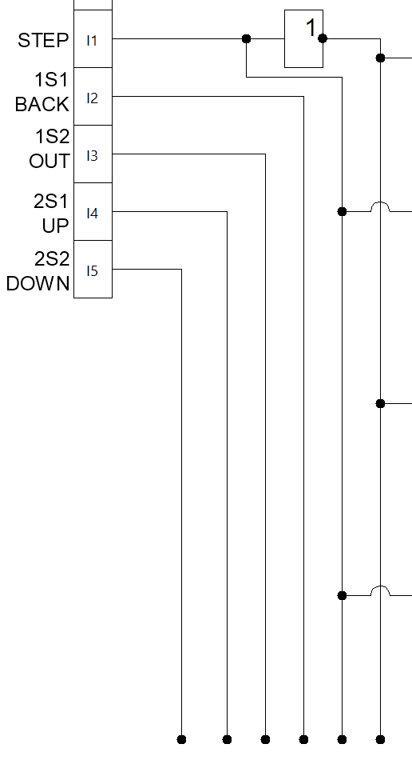
Replacing STEP, One State at a Time
One by one, replace each state's Step or ~Step input with the sensor that actually triggers it.
We won't automate S1. Remove its OR block and the ~Step & S4‑Active path feeding it, so Start feeds straight into S1's RS Set line. Every cycle now begins with a press of Start.
S1 moves the gripper down, so S2 should fire the instant 2S2 confirms cylinder 2 is fully extended. Replace S2's Step input with a line from the 2S2 bus.
Test as you go. Press Start to enter S1. When the gripper reaches the bottom, it should activate and move back to the top. Then toggle Step to complete the cycle.
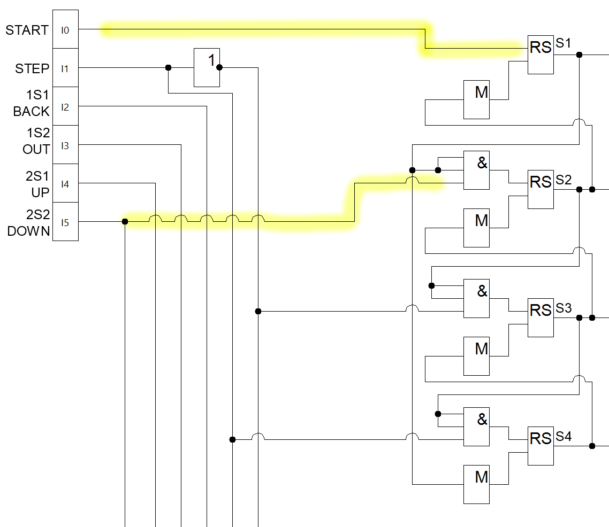
2S2, Connected to S2Automate S3 and S4
Two states down, two to go. Apply the same logic to the rest of the cycle.
S2 moves the gripper up, so S3 should fire the instant 2S1 confirms cylinder 2 is fully retracted. Replace S3's ~Step input with a line from the 2S1 bus.
Test as you go. Press Start to begin the cycle and make sure the machine runs S1, S2, then S3. Toggle Step to finish the cycle.
S3 moves the gripper back down, so S4 should fire the instant 2S2 confirms cylinder 2 is fully extended again. Replace S4's Step input with a line from the same 2S2 bus that already feeds S2.
One more test. Press Start once, and the whole cycle should run on its own.
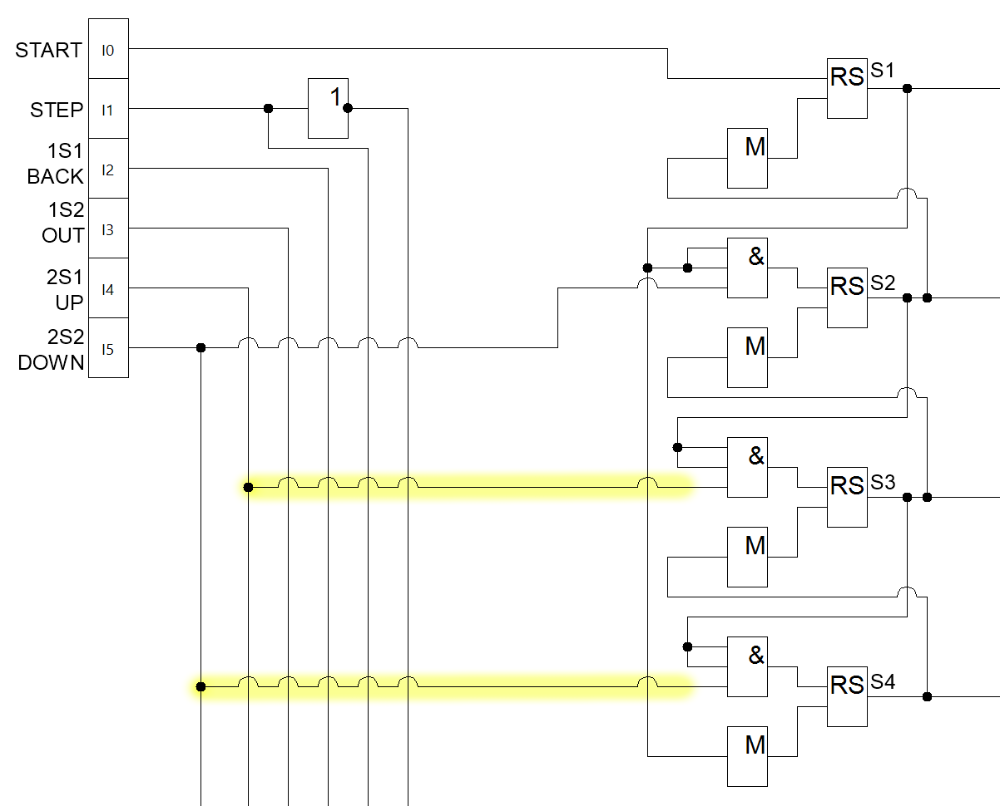
All Four States AutomatedExpand to the Full Pick-and-Place Cycle
Now it's your turn to expand the four-step state machine to a full eight-step cycle. Start by building a state machine with 8 states, wire them up to the outputs, and test it with the machine. When you're done, the machine should be able to pick up a workpiece, move it, and place it down all on its own. When that works, you can add sensors to automate the Step signal and let the machine run completely on its own.
The Full Cycle, Eight States Long
We built a four-step machine which moved from State 1 to State 4, one step at a time. The same idea will work for an eight-step version, controlled the same way: pressing Start moves us into State 1, and toggling Step advances one state at a time on every press and every release.
Once Step 8 finishes, ~STEP sends us right back to S1, ready to run the whole procedure again.
Notice that the same trigger can move us into different states. How does the machine know to move you to S2 the next time you press STEP rather than S2?
The Full Cycle
The full cycle of the pick and place machine has 8 steps, picking up a workpiece at one location and setting it down at another.
The gripper is retracted, waiting for a workpiece to be loaded.
The Build Process
Every stage of this build follows the same rhythm: wire it, then prove it works before moving on.
Wire the AND, RS, and M blocks for each state, chained together in order.
Label each output and drop an OR block in front of it, so every state that needs it can turn it on.
Replace Step and ~Step, one state at a time, with the sensors that actually confirm each move finished.
Test as you go: press Start, then Step through, and confirm each state activates in order.
Test as you go: step through again and watch the right outputs light up for each state.
Test as you go: press Start once, and confirm the whole cycle runs itself.
For eight states: S1 still kicks things off with Start, and the cycle should not automatically repeat. Make sure all eight states run through every time you press Start.
For eight states: many states will have multiple outputs, driving one or both cylinders and/or the gripper at once.
For eight states: since the cylinders move at different rates, S2 through S8 should be triggered by the positions of both cylinders. That keeps the motion predictable, with no incomplete movements.